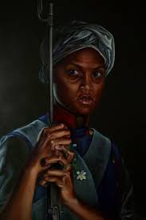

María Remedios del Valle
Conocida como la Madre de la Patria, acompañó al Ejército del Norte, atendió heridos y luchó en combate. Su valentía fue reconocida muchos años después por el Estado argentino.
Importancia: Su legado demuestra que las mujeres fueron protagonistas activas de los procesos históricos que llevaron a la independencia y a la construcción de la nación.
⬆ Volver al inicio